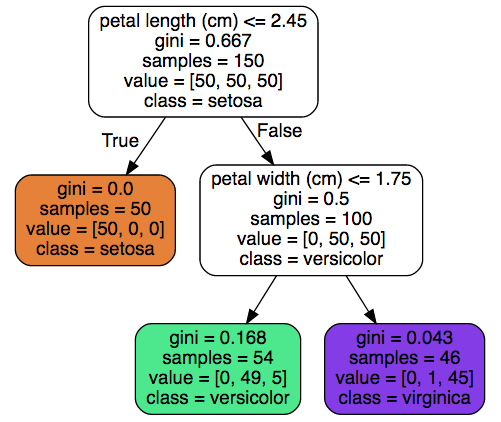
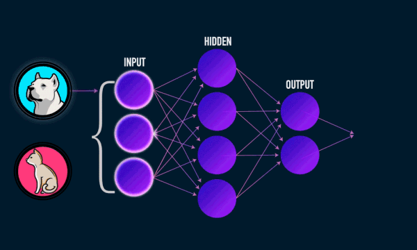
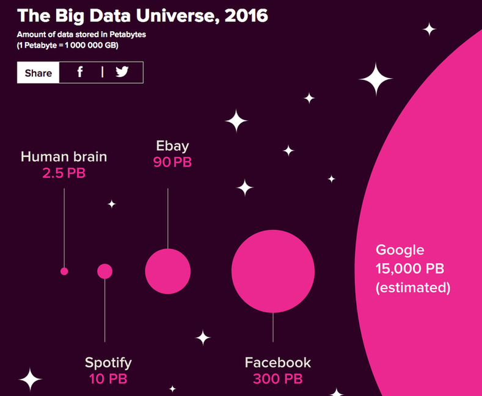

Introduction to Machine Learning¶
The Machine Learning paradigm
The Machine Learning landscape
Overview of some Machine Learning algorithms
The advent of Deep Learning
The Machine Learning paradigm¶
The first definition¶
“The field of study that gives computers the ability to learn without being explicitly programmed” (Arthur Samuel, 1959).
Machine Learning in a nutshell¶
Set of techniques for giving machines the ability to to find patterns and extract rules from data, in order to:
Identify or classify elements
Detect tendencies
Make predictions
As more data is fed into the system, results get better: performance improves with experience.
a.k.a. Statistical Learning.


The Machine Learning landscape¶
Typology of ML systems¶
ML systems are traditionally classified in three categories, according to the amount and type of human supervision during training. Hybrid approaches exist.
Supervised Learning: expected results (called labels or tags) are given to the system along with training data.
Unsupervised Learning: training data comes without the expected results. The system must discover some structure in the data by itself.
Reinforcement Learning: without being given an explicit goal, the system’s decisions produce a reward it tries to maximize.

Regression¶
The system predicts continuous values. Examples: temperature forecasting, asset price prediction…


Classification types¶
Binary: only two possibles classes. Examples: cat/not a cat, spam/legit mail, benign/malignant tumor.
Multiclass: several mutually exclusive classes. Example: handwritten digit recognition.
Multilabel: several non-mutually exclusive classes. Example: face recognition.


Game AI¶
from IPython.display import YouTubeVideo
YouTubeVideo("TmPfTpjtdgg")
Overview of some Machine Learning algorithms¶

Algorithm #2: Decision Trees¶
Build a tree-like structure based on a series of discovered questions on the data.

Algorithm #3: Neural Networks¶
Layers of loosely neuron-inpired computation units that can approximate any continuous function.


The advent of Deep Learning¶
The Deep Learning tsunami¶
DL is a subfield of Machine Learning consisting of multilayered neural networks trained on (generally) vast amounts of data.
Since 2010, DL-based approaches outperformed previous state-of-the-art techniques in many fields (language translation, image and scene recognition…).
Reasons for success¶
Explosion of available data.
Huge progress in computing power.
Refinement of many existing algorithms.
Availability of sophisticated tools for building ML-powered systems.

